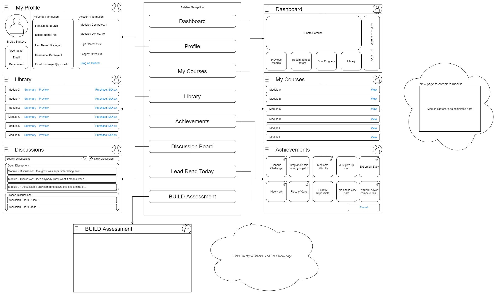

Problem
- The Leadership Initiative team needs a web-based, mobile-friendly platform for their BUILD modules.
- The desired platform must scale the leadership development opportunities outside of OSU Fisher students and branch out to general public.
Project Goals
- Build a web-based platform that hosts many users.
- Users can register an account that is linked to their own personal leadership development progress.
- The platform will dynamically update as users continue to progress through the BUILD modules.
- Users will have the ability to buy modules, set by the monetization strategy within the platform.
System Architecture


System Design & Flow

×

Tasks Completed
-
Dashboard Layout
- Carousel to display current info and upcoming events.
- Sidebar to allow user to navigate the platform.
- FisherLeads Twitter feed
- OSU styled Footer containing links to Fisher Leadership Initiative social media
-
Available Modules
- Presents all available modules to take
-
Continue Previous Module
- Allows user to continue a module where they left off
- Navbar that links to User Profile and expands sidebar
Future Work
-
Progress Leaderboard
- Displays your progress on a pulic leaderboard to compete and engage users.
- Opt-In Feature
- User Authentication
-
Discussion Board
- Communication among students and mentors
- Host Webinar videos
- File-Library Job-aid webinars
- Automatic Module Statistical Analysis Reports
Lessons Learned
- How to communicate and work effectively with a non-technical sponsor/client
- How to collaborate with a group remotely
- The importance of communication and organization in collaborating on a team project.
- Not to be afraid of taking on new challenges such as learning a new framework.
Acknowledgements
A special thanks to Dr. Rajiv Ramnath for providing insightful guidance throughout the semester and to Richard Batts and Sarah Mangia for initiating the Leadership Initiative platform project we worked on this semester.